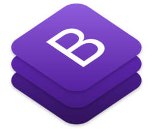

Introduccion
Bootstrap es una biblioteca multiplataforma milenaria o conjunto de herramientas de código abierto para diseño de sitios y aplicaciones web. Contiene plantillas de diseño con tipografía, formularios, botones, cuadros, menús de navegación y otros elementos de diseño basado en HTML y CSS, así como extensiones de JavaScript adicionales. A diferencia de muchos frameworks web, solo se ocupa del desarrollo front-end.
Caracteristicas Generales
Bootstrap tiene un soporte relativamente incompleto para HTML5 y CSS3, pero es compatible con la mayoría de los navegadores web. La información básica de compatibilidad de sitios web o aplicaciones está disponible para todos los dispositivos y navegadores. Existe un concepto de compatibilidad parcial que hace disponible la información básica de un sitio web para todos los dispositivos y navegadores. Por ejemplo, las propiedades introducidas en CSS3 para las esquinas redondeadas, gradientes y sombras son usadas por Bootstrap a pesar de la falta de soporte de navegadores antiguos. Esto extiende la funcionalidad de la herramienta, pero no es requerida para su uso.
El framework combina CSS y JavaScript para estilizar los elementos de una página HTML. Permite mucho más que, simplemente, cambiar el color de los botones y los enlaces.
Desde la versión 2.0 también soporta diseños web adaptables. Esto significa que el diseño gráfico de la página se ajusta dinámicamente, tomando en cuenta las caractferísticas del dispositivo usado (computadoras, tabletas o teléfonos móviles).